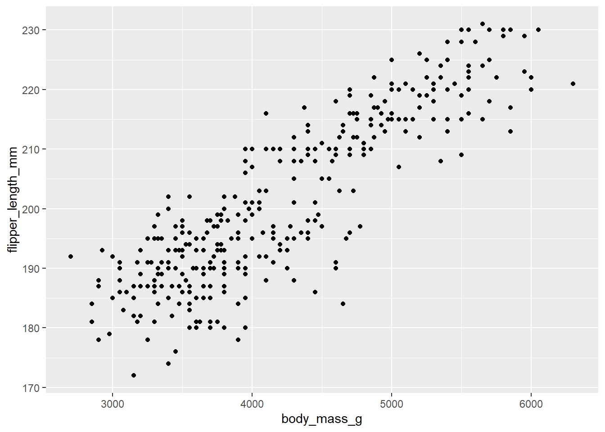

Quarto
1 What is Quarto
Launched in summer 2022, Quarto is similar to the older R Markdown. Instead of exporting graphs and pasting into a Word document, it lets you create a document - graph, text and all. This can make editing easier for you, less confusing if collaborating and better for reproducibility.
This tutorial helps you make an example Quarto document so that you have the choice to use Quarto in the future or understand how others use it.
 @alison_horst
@alison_horst
1.1 Open a Quarto file
In RStudio (version 2022.07.01 or later) go to the File menu > New File > Quarto Document. In the pop up, give the Quarto file a Title such as My Report. Select the radio button for Word (note you can select other outputs) and click Create.
Now save it by going to File > Save As. You could name it My_Big_Important_Report
You will see there is already template content in the Quarto file. Click Render at the top so you understand how Render reads the Quarto file and converts the code into a Word document.
1.2 Ways to edit
The Word file is saved in your R project file. You can edit it by making changes in Quarto in RStudio and it will rewrite the word file. When it is finished you can upload, submit or print it as you would with any other Word file.
Flick between source and visual at the top left so you understand there are two options for editing. We will learn how to edit in source.
2 Make your own Quarto
Delete all template text in the Quarto file except the part at the top called the yaml (pronounced yammel).
The yaml has settings for the whole document. It does not show up in
the final word document. Keep the title as
My Report and the format as a
docx word document. Change the editor from
visual to source since we’re learning to edit in the source
mode using code.

2.1 Formatting text
Try adding some text underneath the yaml. You could copy the text below:
This could be your abstract about a study on common green grasshoppers
(Omocestus viridulus). It could also be about CO2, CH4 and N2O. It is
unlikely you would need to put anything in bold.
Click Render to understand what that will look like in the final word document.
Make italic, subscript and bold text by adding in asterisks and tildes as below.
This could be your abstract about a study on common green grasshoppers
(*Omocestus viridulus*). It could also be about CO~2~, CH~4~ and N~2~O. It is
unlikely you would need to put anything in **bold**.
Click Render and notice the changes.
2.2 Headings
Copy and paste the text below into your Quarto as if you have written an introduction.
Introduction
Background
This is some text about the background to the study.
More background
This part is another sub section of the introduction.
Aims
This is the last sub section of the introduction
Add one hash tag in front of the word # Introduction to
make it a heading. It should turn blue.
Render to see the difference.
Now add two hash tags in front of each of these words
## Background, ## More background and
## Aims to make secondary headings.
Render
Write # Methods and # Resultsheadings
too.
2.3 Code chunks
The biggest benefit of Quarto for report writing is including analyses and graphs. This saves you copying and pasting every time you change a graph or result.
To do this use code chunks to write R code.
Under the Results heading, click on the next line and
click on the green c with a plus icon at the top to insert a code
chunk.
In the middle of the code chunk that appears, write R code to library
load the palmerpenguins package and view the penguins data. It will look
like the picture below with three backticks at the top and bottom and
r in curly brackets.

In the top right corner of the chunk, click the green play arrow so R runs the code.
Now insert another code chunk. Type in the code below to compare penguin flipper length with body mass in a lm.
##
## Call:
## lm(formula = flipper_length_mm ~ body_mass_g, data = penguins)
##
## Residuals:
## Min 1Q Median 3Q Max
## -23.7626 -4.9138 0.9891 5.1166 16.6392
##
## Coefficients:
## Estimate Std. Error t value Pr(>|t|)
## (Intercept) 1.367e+02 1.997e+00 68.47 <2e-16 ***
## body_mass_g 1.528e-02 4.668e-04 32.72 <2e-16 ***
## ---
## Signif. codes: 0 '***' 0.001 '**' 0.01 '*' 0.05 '.' 0.1 ' ' 1
##
## Residual standard error: 6.913 on 340 degrees of freedom
## (2 observations deleted due to missingness)
## Multiple R-squared: 0.759, Adjusted R-squared: 0.7583
## F-statistic: 1071 on 1 and 340 DF, p-value: < 2.2e-16model1 <- lm(flipper_length_mm ~ body_mass_g, data = penguins)
summary(model1)2.4 Echo
You probably don’t want these code chunks to show up in the final
Word document. Including #| echo: false in the second line
of our code chunk will mean the code is not “echoed” in the Word
document i.e. it will not be included.
Challenge
Add #| echo: false to the code chunks.
Other lines you might want to include are #|eval: true
(tells R to run the code), #| error: false (tells R do not
print errors) and #| warning: false (tells R to not print
warnings in the Word document).
Render
2.5 Extracting numbers
We can extract numbers from our statistical output, for example, the
R2 number from the lm is referenced by
summary(model1)$r.squared
Finding a Reference
To find out the reference to a number, the function str
is useful. Try typing str(summary(model1)) into your
console and pressing return to run. You can see R2 is towards
the bottom.
This is useful because now we can embed numbers such as the R2, F, dfs and p values in the text by writing the letter r then the reference surrounded by backquotes. Useful if the analysis changes.
Render
It is possible to pass the references through functions so that the numbers are displayed correctly. For example you might want to display to 2 decimal places or display as less than 0.05.
2.6 Plots
Now include a plot by writing another code chunk containing the following code.
library(ggplot2)
ggplot(penguins, aes(x=body_mass_g, y=flipper_length_mm)) +
geom_point()
Render to see what happens.
You can include a figure legend by adding
#| fig-cap: penguin flipper length and body mass were associated
in the line above the code and below the {r}.
Challenge
For the plot code chunk,decide if should put true or false for
#| echo: and #| eval:
3 More Quarto Possibilities
3.1 Add Citations and References
First add a # Discussion heading.
To include citations and references you need to create a .bib file from your reference manager (such as Endnote or Mendeley) and save in your Rproj.
Creating a .bib File
If you have an Endnote online account. Format > Export References. References: select All References in My Library. In Export style: select BibTeX Export. Save. A file will download. Open the file and go to File > Save as and rename the file references.bib. Then move that file to your Rproj files.
If you have a Mendeley account, tick the boxes to select your references. Choose Export at the bottom and choose BibTeX (*.bib). Save that file to your Rproj.
If you don’t have a reference manager set up, download this BibTeX file and save to your Rproj.
Tell R what your .bib file is by adding another line to your yaml. If
your file is called export.bib add a line that reads
bibliography: export.bib
In the .bib file each reference has an identifying key. It might look
like Vedenina2020 or RN15. Using these keys we
can insert a citation as below.
This sentence would be based on an idea I took from a paper [@Vedenina2020].
This piece of text might be from an idea based on two papers [@Ronacher2019;@Illich2022].
Render
Notice that the Reference has been automatically added to a section at the bottom of the document.
Add the heading # References to the bottom of your
quarto file.
3.2 Title and Contents Page
Adjusting the YAML as below will add title page information and a
contents page. toc stands for table of contents.
depth relates to the level of hashtag headings.
title: "My Report"
subheading: "other information that needs to be on title page"
author: "Your Name"
format: docx
editor: source
bibliography: export.bib
toc: true
toc-depth: 2
toc-title: "Contents"
Render
3.3 Page Breaks
If we wanted to have the abstract and introduction at the top of new
pages, put {{< pagebreak >}} after the yaml and the
abstract text.
Render
3.4 Images
Suppose we wanted to include this image in our methods.
We need to save the photo to an images file in our Rproj. You can download this cricket image file or use an image of your own.
{kind=link}
Then we use this code.

A caption = part adds a figure legend.

Accessible alternative text is added using curly brackets.
{fig-alt="A photo of a green cricket."}
3.5 Links
In your Methods section write the following sentence
Distributions of grasshoppers were taken from orthoptera.org.uk
If you wanted that text to be a hyperlink add < and
>
Distributions of grasshoppers were taken from <orthoptera.org.uk>
Alternatively, you could have different text for the link.
Distributions of grasshoppers were taken from the [Orthoptera and
allied insect webpages](orthoptera.org.uk)
Render
3.6 Quarto website
For more Quarto coding there is a Quarto guide.
This youtube video shows you how to change the fonts used in the Word document by creating a template.
Challenge
Take an assessment or report you are working on or have already done and recreate the word document using a Quarto file.
When you come across something you don’t know how to do use the internet to find the solution.